DDSAnalytics is an analytics company that specializes in talent management solutions for Fortune 100 companies. It is planning to leverage data science for talent management to gain a competitive edge over its competition. Their executive leadership has identified predicting employee turnover as its first application of data science for talent management and they have tasked our data science team to conduct an analysis of existing employee data.
We have to use R on a given dataset to do a data analysis to identify factors that lead to attrition. Based on statistical analysis and evidence, we will identify the top three factors that contribute to turnover along with any other interesting trends and observations. We will also build models to predict attrition and salary.
library(tidyverse)
library(GGally)
library(cowplot)
library(class)
library(caret)
library(e1071)
library(reshape2)
library(stringr)
library(naniar)
library(skimr) #for data summary
Rcolors <- c("lightseagreen", "darkslateblue","orange")# The dataset has 870 observations (rows) and 36 variables (columns).
employee.df <- read.csv("CaseStudy2-data.csv", header = T)
str(employee.df)## 'data.frame': 870 obs. of 36 variables:
## $ ID : int 1 2 3 4 5 6 7 8 9 10 ...
## $ Age : int 32 40 35 32 24 27 41 37 34 34 ...
## $ Attrition : Factor w/ 2 levels "No","Yes": 1 1 1 1 1 1 1 1 1 1 ...
## $ BusinessTravel : Factor w/ 3 levels "Non-Travel","Travel_Frequently",..: 3 3 2 3 2 2 3 3 3 2 ...
## $ DailyRate : int 117 1308 200 801 567 294 1283 309 1333 653 ...
## $ Department : Factor w/ 3 levels "Human Resources",..: 3 2 2 3 2 2 2 3 3 2 ...
## $ DistanceFromHome : int 13 14 18 1 2 10 5 10 10 10 ...
## $ Education : int 4 3 2 4 1 2 5 4 4 4 ...
## $ EducationField : Factor w/ 6 levels "Human Resources",..: 2 4 2 3 6 2 4 2 2 6 ...
## $ EmployeeCount : int 1 1 1 1 1 1 1 1 1 1 ...
## $ EmployeeNumber : int 859 1128 1412 2016 1646 733 1448 1105 1055 1597 ...
## $ EnvironmentSatisfaction : int 2 3 3 3 1 4 2 4 3 4 ...
## $ Gender : Factor w/ 2 levels "Female","Male": 2 2 2 1 1 2 2 1 1 2 ...
## $ HourlyRate : int 73 44 60 48 32 32 90 88 87 92 ...
## $ JobInvolvement : int 3 2 3 3 3 3 4 2 3 2 ...
## $ JobLevel : int 2 5 3 3 1 3 1 2 1 2 ...
## $ JobRole : Factor w/ 9 levels "Healthcare Representative",..: 8 6 5 8 7 5 7 8 9 1 ...
## $ JobSatisfaction : int 4 3 4 4 4 1 3 4 3 3 ...
## $ MaritalStatus : Factor w/ 3 levels "Divorced","Married",..: 1 3 3 2 3 1 2 1 2 2 ...
## $ MonthlyIncome : int 4403 19626 9362 10422 3760 8793 2127 6694 2220 5063 ...
## $ MonthlyRate : int 9250 17544 19944 24032 17218 4809 5561 24223 18410 15332 ...
## $ NumCompaniesWorked : int 2 1 2 1 1 1 2 2 1 1 ...
## $ Over18 : Factor w/ 1 level "Y": 1 1 1 1 1 1 1 1 1 1 ...
## $ OverTime : Factor w/ 2 levels "No","Yes": 1 1 1 1 2 1 2 2 2 1 ...
## $ PercentSalaryHike : int 11 14 11 19 13 21 12 14 19 14 ...
## $ PerformanceRating : int 3 3 3 3 3 4 3 3 3 3 ...
## $ RelationshipSatisfaction: int 3 1 3 3 3 3 1 3 4 2 ...
## $ StandardHours : int 80 80 80 80 80 80 80 80 80 80 ...
## $ StockOptionLevel : int 1 0 0 2 0 2 0 3 1 1 ...
## $ TotalWorkingYears : int 8 21 10 14 6 9 7 8 1 8 ...
## $ TrainingTimesLastYear : int 3 2 2 3 2 4 5 5 2 3 ...
## $ WorkLifeBalance : int 2 4 3 3 3 2 2 3 3 2 ...
## $ YearsAtCompany : int 5 20 2 14 6 9 4 1 1 8 ...
## $ YearsInCurrentRole : int 2 7 2 10 3 7 2 0 1 2 ...
## $ YearsSinceLastPromotion : int 0 4 2 5 1 1 0 0 0 7 ...
## $ YearsWithCurrManager : int 3 9 2 7 3 7 3 0 0 7 ...skim(employee.df)| Name | employee.df |
| Number of rows | 870 |
| Number of columns | 36 |
| _______________________ | |
| Column type frequency: | |
| factor | 9 |
| numeric | 27 |
| ________________________ | |
| Group variables | None |
Variable type: factor
| skim_variable | n_missing | complete_rate | ordered | n_unique | top_counts |
|---|---|---|---|---|---|
| Attrition | 0 | 1 | FALSE | 2 | No: 730, Yes: 140 |
| BusinessTravel | 0 | 1 | FALSE | 3 | Tra: 618, Tra: 158, Non: 94 |
| Department | 0 | 1 | FALSE | 3 | Res: 562, Sal: 273, Hum: 35 |
| EducationField | 0 | 1 | FALSE | 6 | Lif: 358, Med: 270, Mar: 100, Tec: 75 |
| Gender | 0 | 1 | FALSE | 2 | Mal: 516, Fem: 354 |
| JobRole | 0 | 1 | FALSE | 9 | Sal: 200, Res: 172, Lab: 153, Man: 87 |
| MaritalStatus | 0 | 1 | FALSE | 3 | Mar: 410, Sin: 269, Div: 191 |
| Over18 | 0 | 1 | FALSE | 1 | Y: 870 |
| OverTime | 0 | 1 | FALSE | 2 | No: 618, Yes: 252 |
Variable type: numeric
| skim_variable | n_missing | complete_rate | mean | sd | p0 | p25 | p50 | p75 | p100 | hist |
|---|---|---|---|---|---|---|---|---|---|---|
| ID | 0 | 1 | 435.50 | 251.29 | 1 | 218.25 | 435.5 | 652.75 | 870 | ▇▇▇▇▇ |
| Age | 0 | 1 | 36.83 | 8.93 | 18 | 30.00 | 35.0 | 43.00 | 60 | ▂▇▇▃▂ |
| DailyRate | 0 | 1 | 815.23 | 401.12 | 103 | 472.50 | 817.5 | 1165.75 | 1499 | ▇▇▇▇▇ |
| DistanceFromHome | 0 | 1 | 9.34 | 8.14 | 1 | 2.00 | 7.0 | 14.00 | 29 | ▇▅▂▂▂ |
| Education | 0 | 1 | 2.90 | 1.02 | 1 | 2.00 | 3.0 | 4.00 | 5 | ▂▅▇▆▁ |
| EmployeeCount | 0 | 1 | 1.00 | 0.00 | 1 | 1.00 | 1.0 | 1.00 | 1 | ▁▁▇▁▁ |
| EmployeeNumber | 0 | 1 | 1029.83 | 604.79 | 1 | 477.25 | 1039.0 | 1561.50 | 2064 | ▇▇▇▇▇ |
| EnvironmentSatisfaction | 0 | 1 | 2.70 | 1.10 | 1 | 2.00 | 3.0 | 4.00 | 4 | ▅▆▁▇▇ |
| HourlyRate | 0 | 1 | 65.61 | 20.13 | 30 | 48.00 | 66.0 | 83.00 | 100 | ▇▇▆▇▇ |
| JobInvolvement | 0 | 1 | 2.72 | 0.70 | 1 | 2.00 | 3.0 | 3.00 | 4 | ▁▃▁▇▁ |
| JobLevel | 0 | 1 | 2.04 | 1.09 | 1 | 1.00 | 2.0 | 3.00 | 5 | ▇▇▃▂▁ |
| JobSatisfaction | 0 | 1 | 2.71 | 1.11 | 1 | 2.00 | 3.0 | 4.00 | 4 | ▅▅▁▇▇ |
| MonthlyIncome | 0 | 1 | 6390.26 | 4597.70 | 1081 | 2839.50 | 4945.5 | 8182.00 | 19999 | ▇▅▂▁▁ |
| MonthlyRate | 0 | 1 | 14325.62 | 7108.38 | 2094 | 8092.00 | 14074.5 | 20456.25 | 26997 | ▇▇▇▇▇ |
| NumCompaniesWorked | 0 | 1 | 2.73 | 2.52 | 0 | 1.00 | 2.0 | 4.00 | 9 | ▇▃▂▂▁ |
| PercentSalaryHike | 0 | 1 | 15.20 | 3.68 | 11 | 12.00 | 14.0 | 18.00 | 25 | ▇▅▃▂▁ |
| PerformanceRating | 0 | 1 | 3.15 | 0.36 | 3 | 3.00 | 3.0 | 3.00 | 4 | ▇▁▁▁▂ |
| RelationshipSatisfaction | 0 | 1 | 2.71 | 1.10 | 1 | 2.00 | 3.0 | 4.00 | 4 | ▅▅▁▇▇ |
| StandardHours | 0 | 1 | 80.00 | 0.00 | 80 | 80.00 | 80.0 | 80.00 | 80 | ▁▁▇▁▁ |
| StockOptionLevel | 0 | 1 | 0.78 | 0.86 | 0 | 0.00 | 1.0 | 1.00 | 3 | ▇▇▁▂▁ |
| TotalWorkingYears | 0 | 1 | 11.05 | 7.51 | 0 | 6.00 | 10.0 | 15.00 | 40 | ▇▇▂▁▁ |
| TrainingTimesLastYear | 0 | 1 | 2.83 | 1.27 | 0 | 2.00 | 3.0 | 3.00 | 6 | ▂▇▇▂▃ |
| WorkLifeBalance | 0 | 1 | 2.78 | 0.71 | 1 | 2.00 | 3.0 | 3.00 | 4 | ▁▃▁▇▂ |
| YearsAtCompany | 0 | 1 | 6.96 | 6.02 | 0 | 3.00 | 5.0 | 10.00 | 40 | ▇▃▁▁▁ |
| YearsInCurrentRole | 0 | 1 | 4.20 | 3.64 | 0 | 2.00 | 3.0 | 7.00 | 18 | ▇▃▂▁▁ |
| YearsSinceLastPromotion | 0 | 1 | 2.17 | 3.19 | 0 | 0.00 | 1.0 | 3.00 | 15 | ▇▁▁▁▁ |
| YearsWithCurrManager | 0 | 1 | 4.14 | 3.57 | 0 | 2.00 | 3.0 | 7.00 | 17 | ▇▂▅▁▁ |
# There are 300 observations in each dataset below to predict Attrition and Salary respectively.
NoAttrition = read.csv("CaseStudy2CompSet No Attrition.csv", header = TRUE)
NoSalary <- read.csv("CaseStudy2CompSet(NoSalary).csv", header = T)# No missing values are found for any variables (columns) in the dataset.
gg_miss_var(employee.df, show_pct = T) + labs(title = 'Percent Missing Values') + theme(plot.title = element_text(hjust = 0.5))## Warning: It is deprecated to specify `guide = FALSE` to remove a guide. Please use `guide = "none"` instead.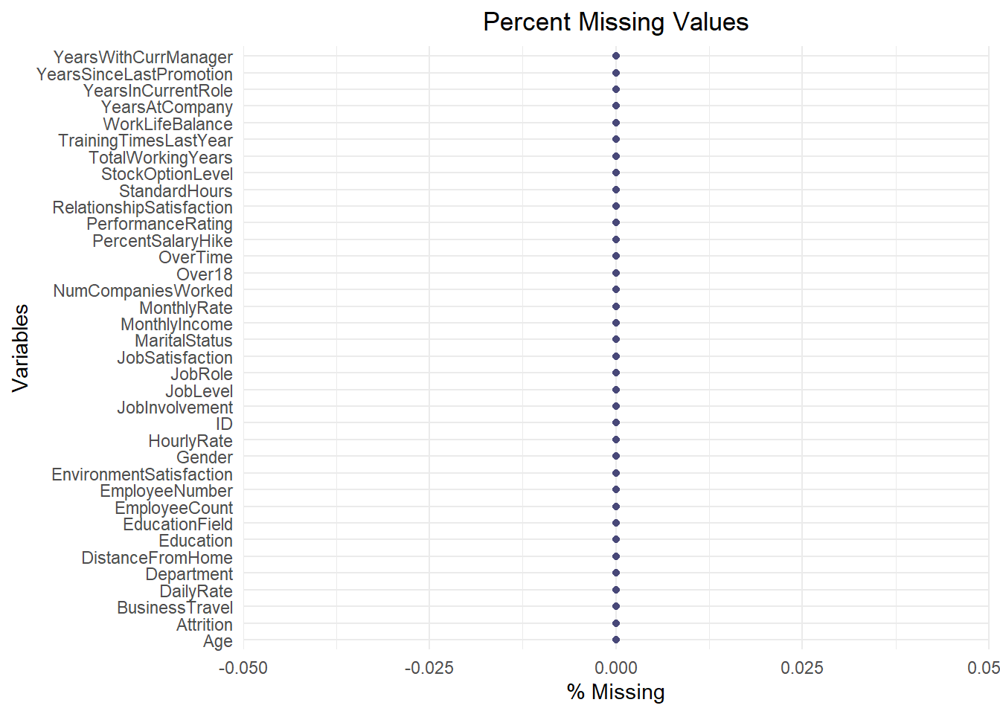
employee.df %>% ggplot(aes(x = Attrition, fill = Attrition)) +
geom_bar() +
ggtitle("Distribution of Attrition") +
theme(plot.title = element_text(hjust = 0.5)) +
scale_fill_manual(values = Rcolors)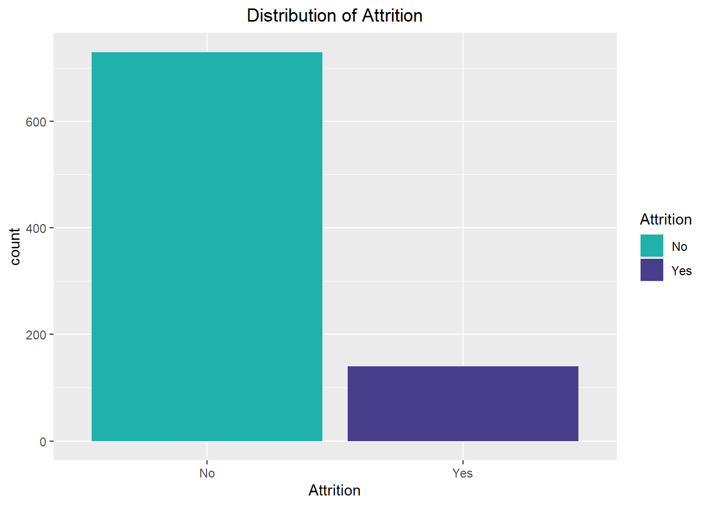
# We see from the histogram that most number of employees have salary in range $2000-$4000 and then second highest range is $4000-$6000.
ggplot(employee.df, aes(x=MonthlyIncome, fill = Attrition)) +
geom_histogram() +
ggtitle("Monthly Income Based on Attrition") +
xlab("Monthly Income") +
ylab("Count") +
theme(plot.title = element_text(hjust = 0.5)) +
scale_fill_manual(values = Rcolors)## `stat_bin()` using `bins = 30`. Pick better value with `binwidth`.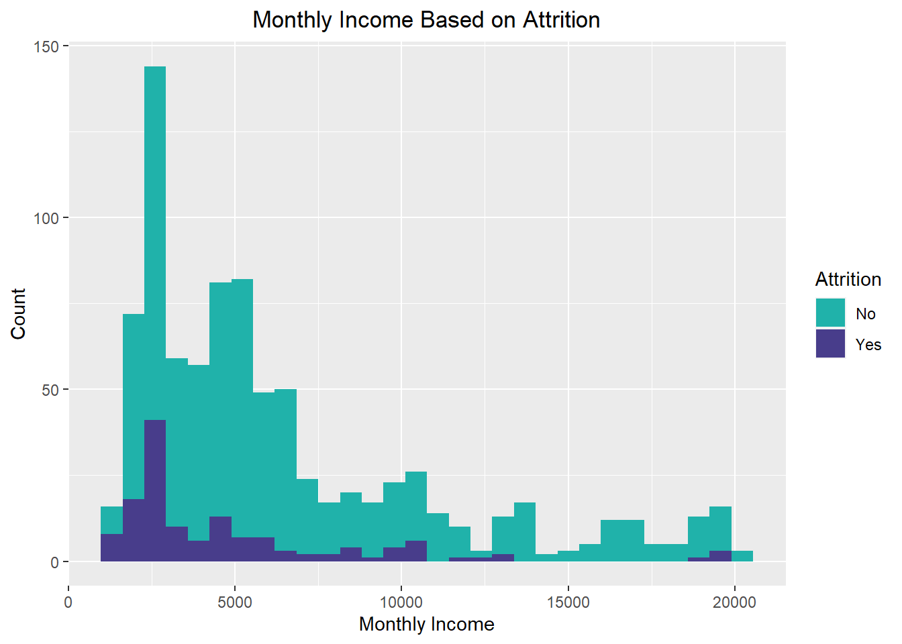
# Let's create income groups and look at Attrition for those income groups.
employee.df$IncomeGroup <- cut(employee.df$MonthlyIncome, breaks = c(0, 2000, 4000, 6000, 10000, 15000, 20000), labels = c("<$2000","$2000-$4000","$4000-$6000","$6000-$10000","$10000-$15000","$15000-$20000"))
# Lowest Income Group (<$2000) has the highest Attrition rate, followed by second lowest Income Group ($2000-$4000).
employee.df %>% ggplot(aes_string(x = "IncomeGroup", fill = "Attrition")) +
geom_bar(position = "fill") +
scale_y_continuous(labels = scales::percent) +
labs(x = "Income Group", y = "Percent Employees", title = "Attrition for Income Groups") +
theme(plot.title = element_text(hjust = 0.5)) +
scale_fill_manual(values = Rcolors)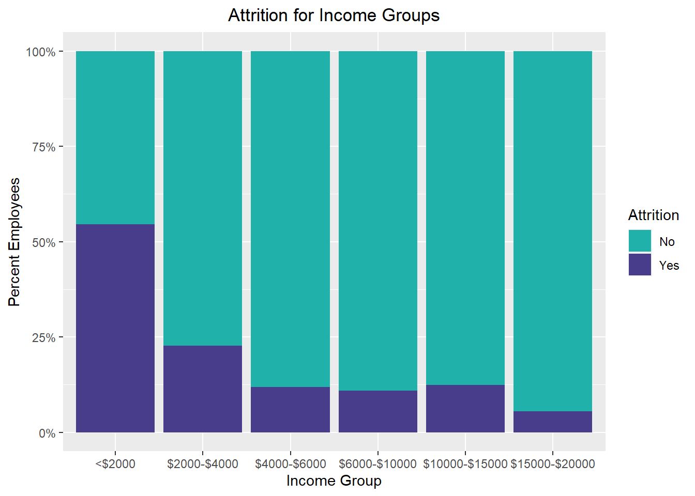
# Let's create age groups and look at Attrition for those age groups.
employee.df$AgeGroup <- cut(employee.df$Age, breaks = c(18,25,35,45,60), labels = c("18-25","25-35","35-45","45-60"), include.lowest = TRUE)
# Younger age groups 18-25 and 25-35 have higher attrition rate.
employee.df %>% ggplot(aes_string(x = "AgeGroup", fill = "Attrition")) +
geom_bar(position = "fill") +
scale_y_continuous(labels = scales::percent) +
labs(x = "Age Group", y = "Percent Employees", title = "Attrition for Age Groups") +
theme(plot.title = element_text(hjust = 0.5)) +
scale_fill_manual(values = Rcolors)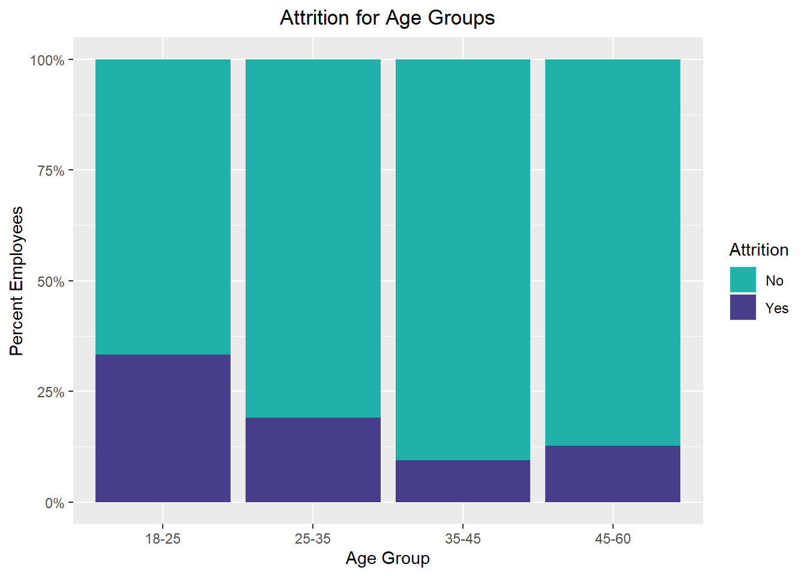
# Research Directors have highest attrition rate whereas Sales Representatives have the least.
employee.df %>% ggplot(aes_string(x = "JobRole", fill = "Attrition")) +
geom_bar(position = "fill") +
scale_y_continuous(labels = scales::percent) +
labs(x = "Job Role", y = "Percent Employees", title = "Attrition for Job Role") +
theme(plot.title = element_text(hjust = 0.5)) +
coord_flip() +
scale_x_discrete(labels = function(x) str_wrap(x, width = 12)) +
scale_fill_manual(values = Rcolors)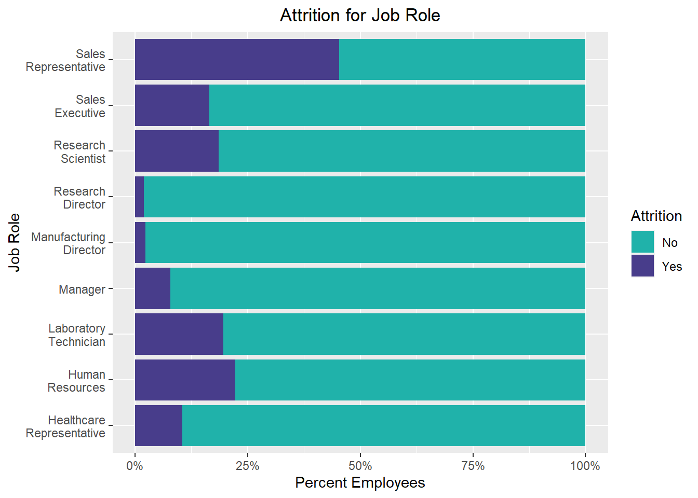
ggplot(employee.df, aes(x=MonthlyIncome, fill = Attrition)) +
geom_histogram() +
facet_wrap(~JobRole) +
ggtitle("Monthly Income based on Job Role") +
xlab("Monthly Income") +
ylab("Count") +
theme(plot.title = element_text(hjust = 0.5)) +
scale_fill_manual(values = Rcolors)## `stat_bin()` using `bins = 30`. Pick better value with `binwidth`.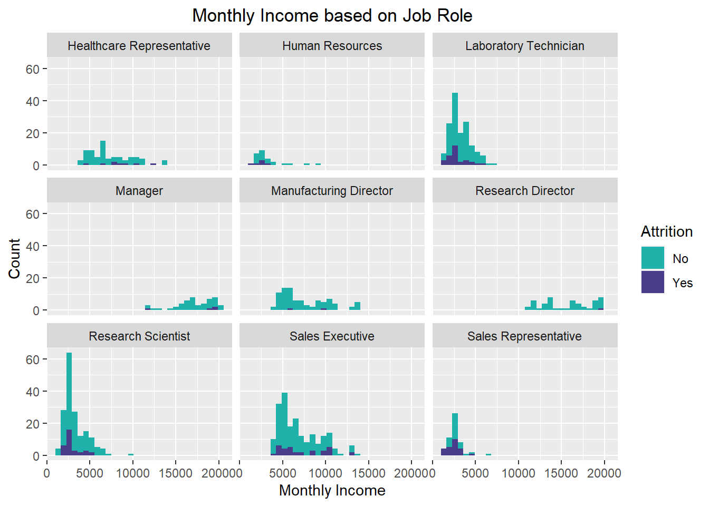
ggplot(employee.df, aes(x=JobSatisfaction, fill = Attrition)) +
geom_bar() +
ggtitle("Attrition based on Job Role and Job Satisfaction") +
theme(plot.title = element_text(hjust = 0.5)) +
scale_fill_manual(values = Rcolors) +
facet_wrap(~JobRole)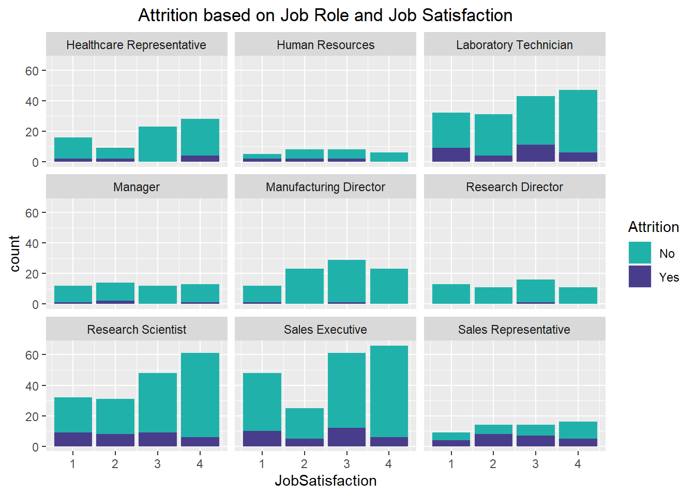
ggplot(employee.df, aes(x=Age, y=MonthlyIncome, color = Attrition)) +
geom_point() +
facet_wrap(~JobRole) +
ggtitle("Attrition based on Age and Monthly Income") +
theme(plot.title = element_text(hjust = 0.5)) +
scale_color_manual(values = Rcolors)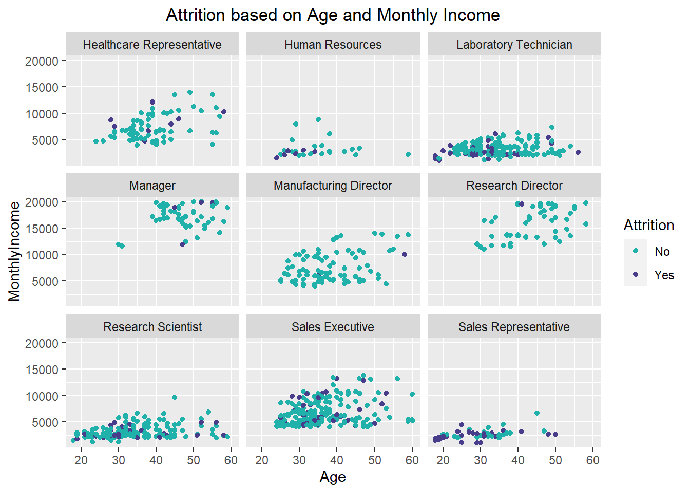
# Higher attrition rate for employees who work overtime.
employee.df %>% ggplot(aes_string(x = "OverTime", fill = "Attrition")) +
geom_bar(position = "fill") +
scale_y_continuous(labels = scales::percent) +
labs(x = "Overtime", y = "Percent Employees", title = "Attrition for Overtime") +
theme(plot.title = element_text(hjust = 0.5)) +
scale_fill_manual(values = Rcolors)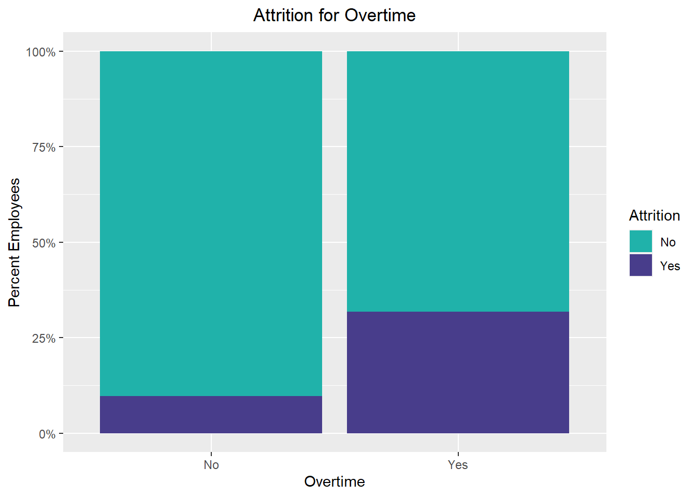
# Attrition level goes up from Non-Travel to Travel-Frequently category.
employee.df %>% ggplot(aes_string(x = "BusinessTravel", fill = "Attrition")) +
geom_bar(position = "fill") +
scale_y_continuous(labels = scales::percent) +
labs(x = "Business Travel", y = "Percent Employees", title = "Attrition for Business Travel") +
theme(plot.title = element_text(hjust = 0.5)) +
scale_fill_manual(values = Rcolors)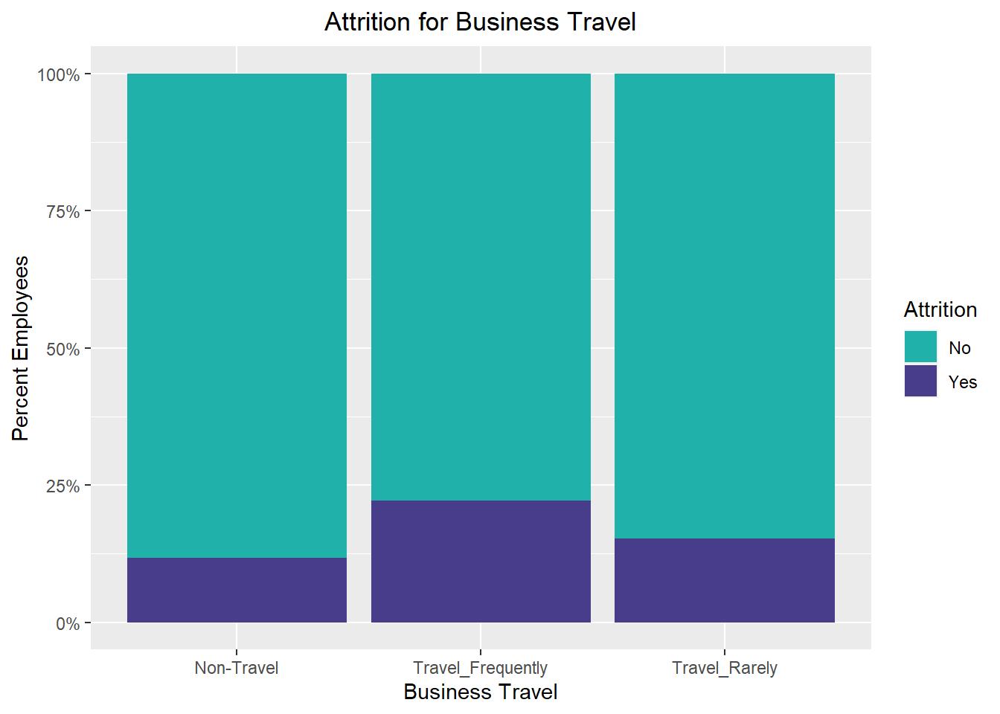
# Divorce contribute to attrition
bar <- ggplot(employee.df, aes(x=MaritalStatus, fill = MaritalStatus)) +
geom_bar() +
facet_wrap(~Attrition) +
ggtitle("Attrition Dependent on Marital Status ") +
xlab("Attrition") +
ylab("Count")
bar <- bar + scale_fill_manual(values = Rcolors)
# Yes Attrition
# Make new data frames for married, divorced, and single
df1 <- employee.df %>%
filter(Attrition == "Yes")
df1length <- NROW(df1)
df1married <- length(grep("Married", df1$MaritalStatus))
df1divorced <- length(grep("Divorced", df1$MaritalStatus))
df1single <- length(grep("Single", df1$MaritalStatus))
Yes_df <- data.frame(MaritalStatus = c("Married","Divorced","Single"),
Value = c(df1married,df1divorced,df1single))
plot1 <- ggplot(Yes_df, aes(x="", y=Value, fill=MaritalStatus)) +
geom_bar(width = 1, stat = "identity") + xlab("") + ylab("") + ggtitle("Attrition: Yes")
pie1 <- plot1 + coord_polar("y", start=0)
pie1 <- pie1 + scale_fill_manual(values = Rcolors)
# No Attrition
# Make new data frames for married, divorced, and single
df2 <- employee.df %>%
filter(Attrition == "No")
df2length <- NROW(df2)
df2married <- length(grep("Married", df2$MaritalStatus))
df2divorced <- length(grep("Divorced", df2$MaritalStatus))
df2single <- length(grep("Single", df2$MaritalStatus))
No_df <- data.frame(MaritalStatus = c("Married","Divorced","Single"),
Value = c(df2married,df2divorced,df2single))
plot2 <- ggplot(No_df, aes(x="", y=Value, fill=MaritalStatus)) +
geom_bar(width = 1, stat = "identity") + xlab("") + ylab("") + ggtitle("Attrition: No")
pie2 <- plot2 + coord_polar("y", start=0)
pie2 <- pie2 + scale_fill_manual(values = Rcolors)
piecharts <- plot_grid(pie2,pie1, ncol = 2, labels = c("B","C"))
allplots <- plot_grid(bar,piecharts, nrow = 2, labels = "A")
allplots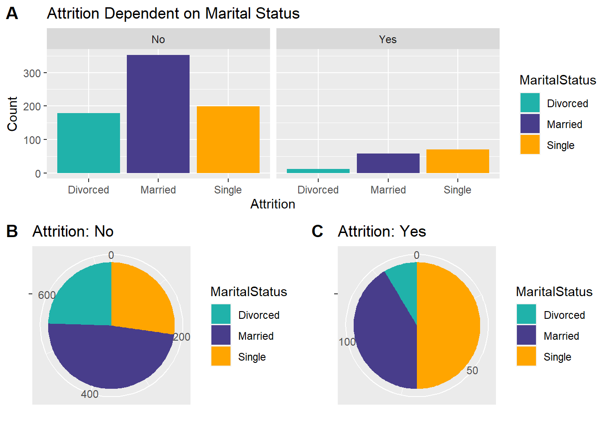
EDA1 <- ggplot(employee.df, aes(x=RelationshipSatisfaction, fill = Attrition)) +
geom_bar(position = "fill") +
ggtitle("Relationship Satisfaction") +
ylab("% Count") +
scale_y_continuous(labels = scales::percent) +
theme(legend.position = "none") +
scale_fill_manual(values = Rcolors)
EDA1 <- EDA1 + theme(plot.title = element_text(size = 12, hjust = 0.5))
EDA2 <- ggplot(employee.df, aes(x=JobLevel, fill = Attrition)) +
geom_bar(position = "fill") +
ggtitle("Job Level") +
ylab("% Count") +
scale_y_continuous(labels = scales::percent) +
theme(legend.position = "none") +
scale_fill_manual(values = Rcolors)
EDA2 <- EDA2 + theme(plot.title = element_text(size = 12, hjust = 0.5))
EDA3 <- ggplot(employee.df, aes(x=JobSatisfaction, fill = Attrition)) +
geom_bar(position = "fill") +
ggtitle("Job Satisfaction") +
ylab("% Count") +
scale_y_continuous(labels = scales::percent) +
theme(legend.position = "none") +
scale_fill_manual(values = Rcolors)
EDA3 <- EDA3 + theme(plot.title = element_text(size = 12, hjust = 0.5))
EDA4 <- ggplot(employee.df, aes(x=YearsWithCurrManager, fill = Attrition)) +
geom_bar(position = "fill") +
ggtitle("Years With Current Manager") +
ylab("% Count") +
scale_y_continuous(labels = scales::percent) +
theme(legend.position = "none") +
scale_fill_manual(values = Rcolors)
EDA4 <- EDA4 + theme(plot.title = element_text(size = 12, hjust = 0.5))
EDA5 <- ggplot(employee.df, aes(x=YearsSinceLastPromotion, fill = Attrition)) +
geom_bar(position = "fill") +
ggtitle("Years Since Last Promotion") +
ylab("% Count") +
scale_y_continuous(labels = scales::percent) +
theme(legend.position = "none") +
scale_fill_manual(values = Rcolors)
EDA5 <- EDA5 + theme(plot.title = element_text(size = 12, hjust = 0.5))
EDA6 <- ggplot(employee.df, aes(x=YearsAtCompany, fill = Attrition)) +
geom_bar(position = "fill") +
ggtitle("Years At Company") +
ylab("% Count") +
scale_y_continuous(labels = scales::percent) +
theme(legend.position = "none") +
scale_fill_manual(values = Rcolors)
EDA6 <- EDA6 + theme(plot.title = element_text(size = 12, hjust = 0.5))
EDA7 <- ggplot(employee.df, aes(x=YearsInCurrentRole, fill = Attrition)) +
geom_bar(position = "fill") +
ggtitle("Years in Current Role") +
ylab("% Count") +
scale_y_continuous(labels = scales::percent) +
theme(legend.position = "none") +
scale_fill_manual(values = Rcolors)
EDA7 <- EDA7 + theme(plot.title = element_text(size = 12, hjust = 0.5))
EDA8 <- ggplot(employee.df, aes(x=NumCompaniesWorked, fill = Attrition)) +
geom_bar(position = "fill") +
ggtitle("Companies Worked") +
ylab("% Count") +
scale_y_continuous(labels = scales::percent) +
theme(legend.position = "none") +
scale_fill_manual(values = Rcolors)
EDA8 <- EDA8 + theme(plot.title = element_text(size = 12, hjust = 0.5))
EDA9 <- ggplot(employee.df, aes(x=MaritalStatus, fill = Attrition)) +
geom_bar(position = "fill") +
ggtitle("Marital Status") +
ylab("% Count") +
scale_y_continuous(labels = scales::percent) +
theme(legend.position = "none") +
scale_fill_manual(values = Rcolors)
EDA9 <- EDA9 + theme(plot.title = element_text(size = 12, hjust = 0.5))
EDA10 <- plot_grid(EDA1,EDA2,EDA3,EDA4,EDA5,EDA6,EDA7,EDA8,EDA9, ncol = 3, nrow = 3)
EDA10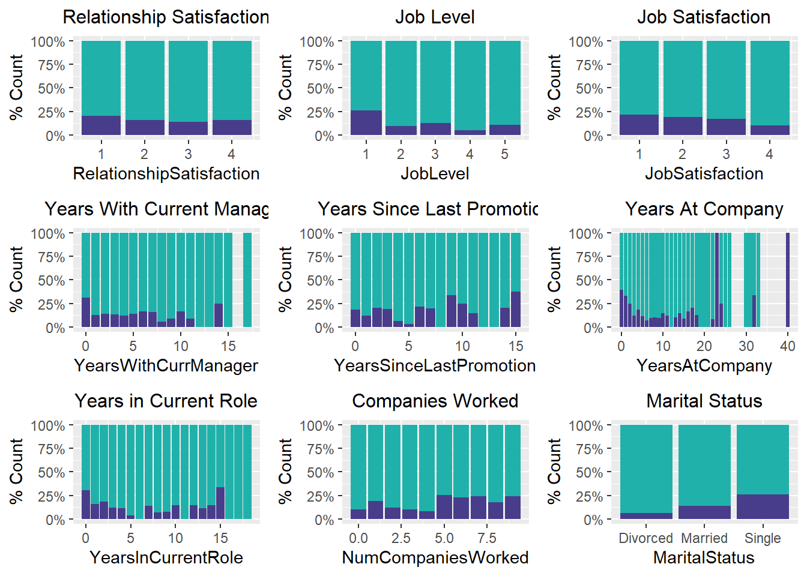
EDA.A <- ggplot(employee.df, aes(x=TotalWorkingYears, y=PercentSalaryHike, color = Attrition)) +
geom_point() +
ggtitle("Total Working Years vs % Salary Hike") +
scale_color_manual(values = Rcolors) +
ylab("% Salary Hike") +
theme(plot.title = element_text(size = 12, hjust = 0.5))
EDA.B <- ggplot(employee.df, aes(x=YearsWithCurrManager, y=PercentSalaryHike, color = Attrition)) +
geom_point() +
ggtitle("Yrs With Manager vs % Salary Hike") +
scale_color_manual(values = Rcolors) +
ylab("% Salary Hike") +
xlab("Yrs With Manager") +
theme(plot.title = element_text(size = 12, hjust = 0.5))
EDA.C <-ggplot(employee.df, aes(x=YearsAtCompany, y=YearsInCurrentRole, color = Attrition)) +
geom_point() +
ggtitle("Yrs At Company vs Yrs In Role") +
scale_color_manual(values = Rcolors) +
ylab("Yrs In Role") +
theme(plot.title = element_text(size = 12, hjust = 0.5))
EDA.E <- ggplot(employee.df, aes(x=Age, y=YearsSinceLastPromotion, color = Attrition)) +
geom_point() +
ggtitle("Age vs Job Yrs Last Promotion") +
scale_color_manual(values = Rcolors) +
ylab("Yrs Last Promotion") +
theme(plot.title = element_text(size = 12, hjust = 0.5))
EDA.G <- plot_grid(EDA.A,EDA.B,EDA.C,EDA.E, ncol = 2, nrow = 2)
EDA.G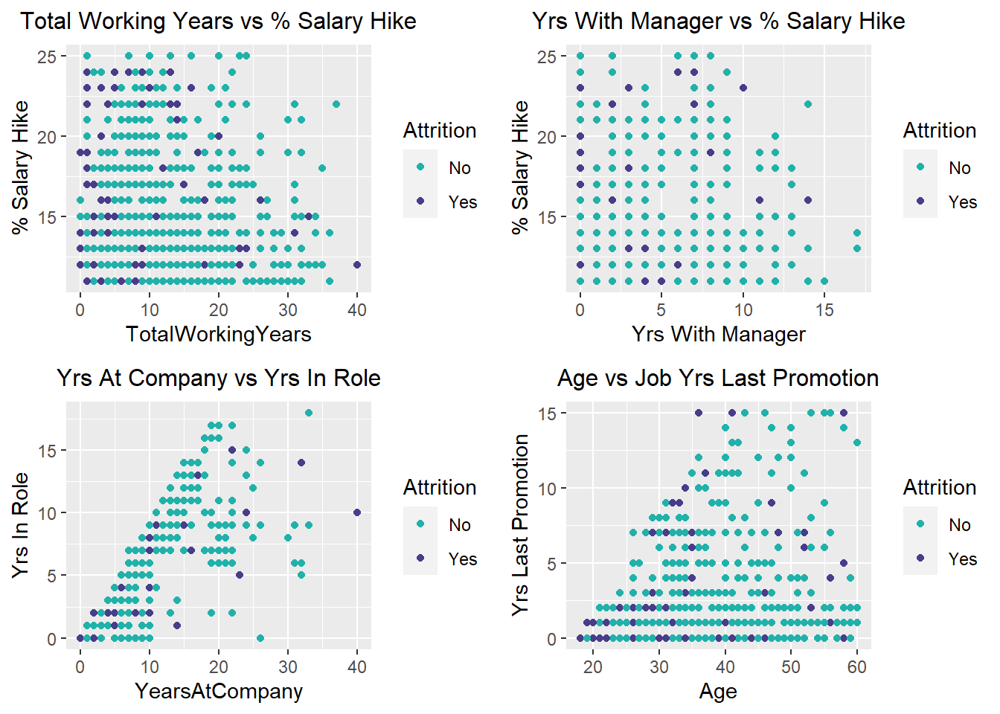
set.seed(9)
NB.df <- select(employee.df, "Attrition", "Age", "Department", "EnvironmentSatisfaction", "JobInvolvement", "JobLevel", "JobRole", "JobSatisfaction", "MaritalStatus", "MonthlyIncome", "NumCompaniesWorked", "OverTime", "StockOptionLevel", "TotalWorkingYears", "WorkLifeBalance", "YearsAtCompany", "YearsInCurrentRole", "YearsWithCurrManager")
NBsplitPerc <- .85
NBtrainIndices <- sample(1:dim(NB.df)[1],round(NBsplitPerc * dim(NB.df)[1]))
NBdfTrain <- NB.df[NBtrainIndices,]
NBdfTest <- NB.df[-NBtrainIndices,]
# Naive Bayes model
NBmodel = naiveBayes(Attrition~.,data = NBdfTrain)
confusionMatrix(table(predict(NBmodel,NBdfTest),NBdfTest$Attrition))## Confusion Matrix and Statistics
##
##
## No Yes
## No 96 6
## Yes 10 18
##
## Accuracy : 0.8769
## 95% CI : (0.8078, 0.928)
## No Information Rate : 0.8154
## P-Value [Acc > NIR] : 0.0401
##
## Kappa : 0.616
##
## Mcnemar's Test P-Value : 0.4533
##
## Sensitivity : 0.9057
## Specificity : 0.7500
## Pos Pred Value : 0.9412
## Neg Pred Value : 0.6429
## Prevalence : 0.8154
## Detection Rate : 0.7385
## Detection Prevalence : 0.7846
## Balanced Accuracy : 0.8278
##
## 'Positive' Class : No
## # Make predictions with model
NBpreds = predict(NBmodel, NoAttrition)
NBpreds = data.frame(NBpreds)
NoAttrition$Attrition = NBpreds$NBpreds
Attrition.Classify = NoAttrition %>% select("ID", "Attrition") %>% arrange(ID)
# This code was used to label the predicted attrition on the file provided, but commented out to not replace the file when knitted at a later time.
#write.csv(Attrition.Classify, file = "Case2PredictionsBoyd_Pandey Attrition.csv", row.names=FALSE)
# plot counts of attrition
ggplot(Attrition.Classify, aes(x=Attrition, fill=Attrition)) +
geom_bar(fill = Rcolors[c(1,2)]) +
ggtitle("Predicted Attrition") +
ylab("Count") +
theme(plot.title = element_text(hjust = 0.5))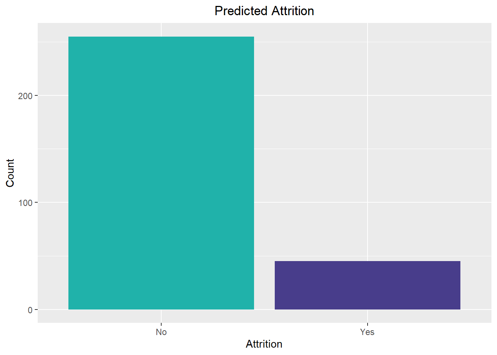
iterations = 100
masterAcc = matrix(nrow = iterations)
masterSens = matrix(nrow = iterations)
masterSpec = matrix(nrow = iterations)
splitPerc = .85 #Training / Test split Percentage
for(j in 1:iterations)
{
trainIndices = sample(1:dim(NB.df)[1],round(splitPerc * dim(NB.df)[1]))
train = NB.df[trainIndices,]
test = NB.df[-trainIndices,]
model = naiveBayes(train[,c(2:18)],train$Attrition)
table(predict(model,test[,c(2:18)]),test$Attrition)
CM = confusionMatrix(table(predict(model,test[,c(2:18)]),test$Attrition))
masterAcc[j] = CM$overall[1]
masterSens[j] = CM$byClass[1]
masterSpec[j] = CM$byClass[2]
}
# Accuracy measurements
MeanAcc = colMeans(masterAcc)
MeanAcc## [1] 0.8masterAcc <- data.frame(masterAcc)
masterAcc$TestNumber <- 1:nrow(masterAcc)
max(masterAcc$masterAcc)## [1] 0.8846154min(masterAcc$masterAcc)## [1] 0.6923077ggplot(masterAcc, aes(x=seq(1,100,1), y=masterAcc)) +
geom_line(color="darkslateblue") +
ggtitle("Accuracy of 100 Train/Test Sets") +
xlab("Number of Train/Test Sets") +
ylab("Accuracy") +
theme(plot.title = element_text(hjust = 0.5))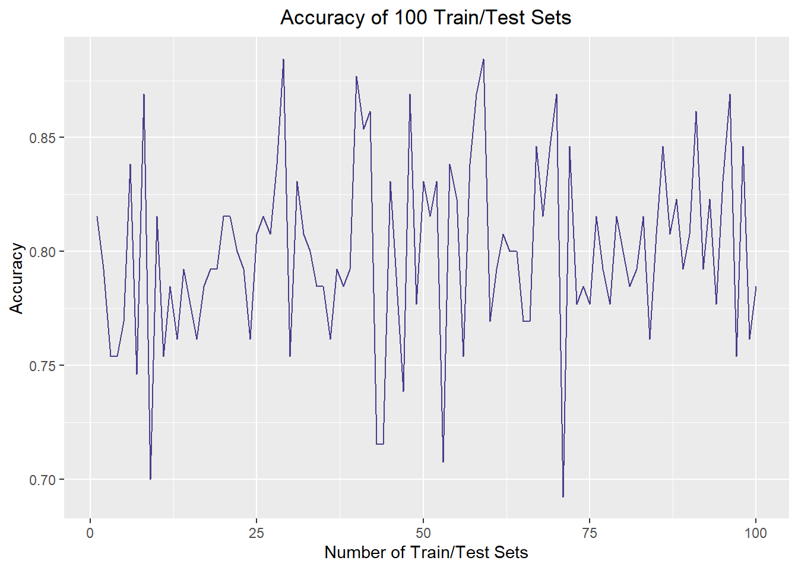
# Sensitivity measurements
MeanSens = colMeans(masterSens)
MeanSens## [1] 0.8387946masterSens <- data.frame(masterSens)
masterSens$TestNumber <- 1:nrow(masterSens)
max(masterSens$masterSens)## [1] 0.9528302min(masterSens$masterSens)## [1] 0.7272727ggplot(masterSens, aes(x=seq(1,100,1), y=masterSens)) +
geom_line(color="darkslateblue") +
ggtitle("Sensitivity of 100 Train/Test Sets") +
xlab("Number of Train/Test Sets") +
ylab("Sensitivity") +
theme(plot.title = element_text(hjust = 0.5))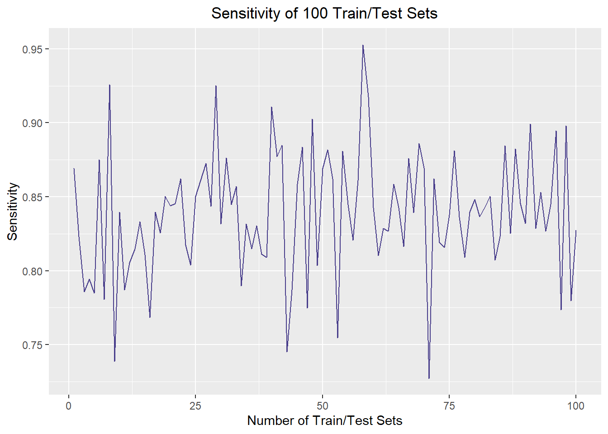
# Specificity measurements
MeanSpec = colMeans(masterSpec)
MeanSpec## [1] 0.6028654masterSpec <- data.frame(masterSpec)
masterSpec$TestNumber <- 1:nrow(masterSpec)
max(masterSpec$masterSpec)## [1] 0.8666667min(masterSpec$masterSpec)## [1] 0.3636364ggplot(masterSpec, aes(x=seq(1,100,1), y=masterSpec)) +
geom_line(color="darkslateblue") +
ggtitle("Specificity of 100 Train/Test Sets") +
xlab("Number of Train/Test Sets") +
ylab("Specificity") +
theme(plot.title = element_text(hjust = 0.5))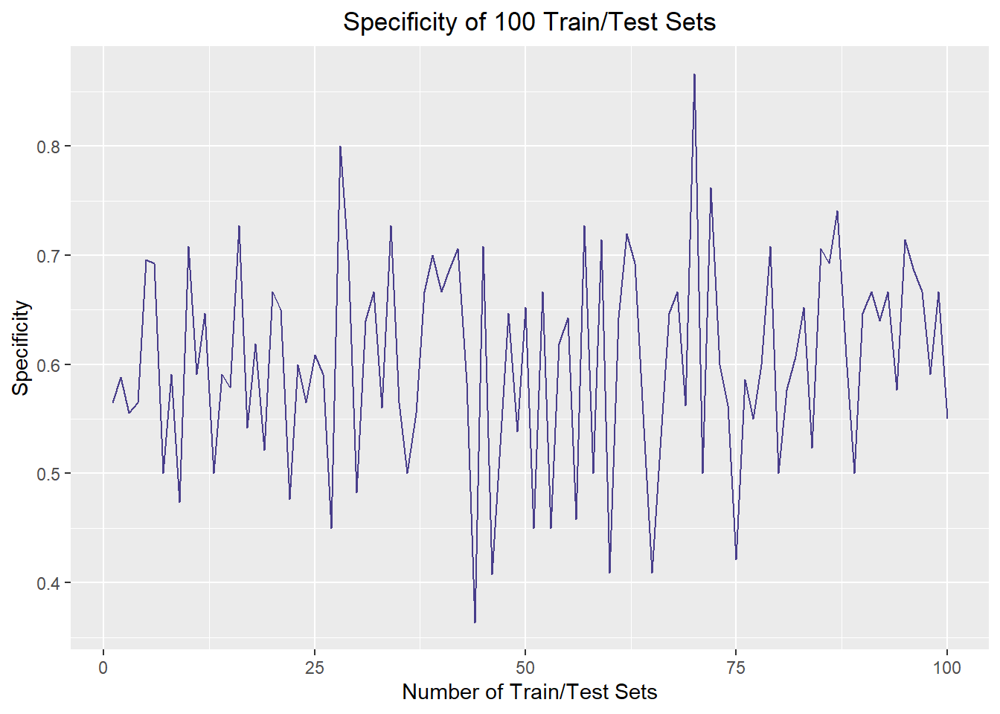
# Plot together
masterAcc$Value <- masterAcc$masterAcc
masterAcc$Test <- "Accuracy"
masterSpec$Value <- masterSpec$masterSpec
masterSpec$Test <- "Specificity"
masterSens$Value <- masterSens$masterSens
masterSens$Test <- "Sensitivity"
NB.df <- rbind(masterAcc[,c(2,3,4)],masterSens[,c(2,3,4)],masterSpec[,c(2,3,4)])
ggplot(NB.df, aes(x=TestNumber, y=Value, linetype=Test, colors=Test)) +
geom_line(color = "darkslateblue") +
ggtitle("Accuracy, Sensitivity, & Specificity of 100 Train/Test Sets") +
xlab("Number of Train/Test Sets") +
ylab("Statistical Values") +
theme(plot.title = element_text(hjust = 0.5)) +
scale_color_manual(values = Rcolors)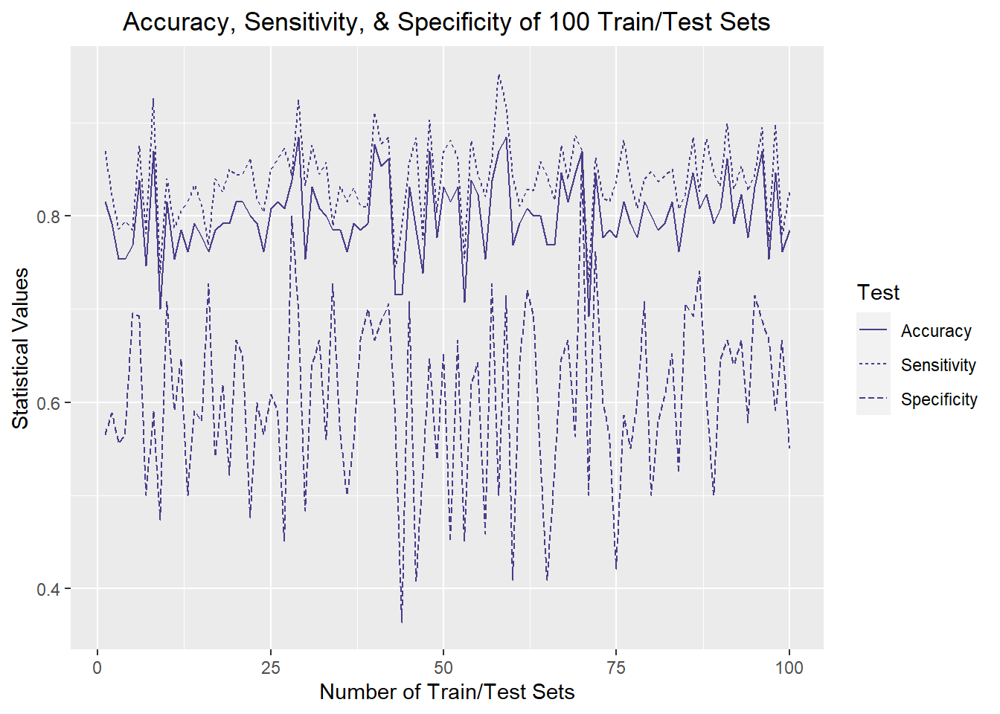
kNNsplitPerc <- .7
# Create dataframe for k-NN model
knn.df <- employee.df
# Create standardized variables
knn.df$z_Age = scale(knn.df$Age)
knn.df$z_YearsSinceLastPromotion = scale(knn.df$YearsSinceLastPromotion)
kNNtrainIndices <- sample(1:dim(knn.df)[1],round(kNNsplitPerc * dim(knn.df)[1]))
kNNdfTrain <- knn.df[kNNtrainIndices,]
kNNdfTest <- knn.df[-kNNtrainIndices,]
# Internal Model
classifications <- knn.cv(knn.df[,c(2,25)],knn.df$Attrition, k = 20)
confusionMatrix(table(classifications,knn.df$Attrition))## Confusion Matrix and Statistics
##
##
## classifications No Yes
## No 728 140
## Yes 2 0
##
## Accuracy : 0.8368
## 95% CI : (0.8105, 0.8607)
## No Information Rate : 0.8391
## P-Value [Acc > NIR] : 0.595
##
## Kappa : -0.0046
##
## Mcnemar's Test P-Value : <2e-16
##
## Sensitivity : 0.9973
## Specificity : 0.0000
## Pos Pred Value : 0.8387
## Neg Pred Value : 0.0000
## Prevalence : 0.8391
## Detection Rate : 0.8368
## Detection Prevalence : 0.9977
## Balanced Accuracy : 0.4986
##
## 'Positive' Class : No
## # External Model
classifications1 <- knn(kNNdfTrain[,c(2,35)], kNNdfTest[,c(2,35)], kNNdfTrain$Attrition,
prob = TRUE, k = 20)
confusionMatrix(table(classifications1,kNNdfTest$Attrition))## Confusion Matrix and Statistics
##
##
## classifications1 No Yes
## No 218 37
## Yes 3 3
##
## Accuracy : 0.8467
## 95% CI : (0.7972, 0.8882)
## No Information Rate : 0.8467
## P-Value [Acc > NIR] : 0.5421
##
## Kappa : 0.0942
##
## Mcnemar's Test P-Value : 1.811e-07
##
## Sensitivity : 0.9864
## Specificity : 0.0750
## Pos Pred Value : 0.8549
## Neg Pred Value : 0.5000
## Prevalence : 0.8467
## Detection Rate : 0.8352
## Detection Prevalence : 0.9770
## Balanced Accuracy : 0.5307
##
## 'Positive' Class : No
## # Train and Test for Linear Regression
set.seed(9)
lmsplitPerc <- .8
trainIndices <- sample(1:dim(employee.df)[1],round(lmsplitPerc * dim(employee.df)[1]))
dfTrain <- employee.df[trainIndices,]
dfTest <- employee.df[-trainIndices,]
dfTrain <- na.omit(dfTrain)
dfTest <- na.omit(dfTest)
# Multiple variable linear regression with train and test
Model1_fit = lm(MonthlyIncome~Age+JobLevel+JobRole, data = dfTrain)
summary(Model1_fit)##
## Call:
## lm(formula = MonthlyIncome ~ Age + JobLevel + JobRole, data = dfTrain)
##
## Residuals:
## Min 1Q Median 3Q Max
## -3613.5 -719.0 -4.9 630.4 4012.9
##
## Coefficients:
## Estimate Std. Error t value Pr(>|t|)
## (Intercept) -269.283 290.067 -0.928 0.353556
## Age 11.298 5.424 2.083 0.037602 *
## JobLevel 2995.928 79.096 37.877 < 2e-16 ***
## JobRoleHuman Resources -447.969 294.175 -1.523 0.128271
## JobRoleLaboratory Technician -754.446 198.958 -3.792 0.000163 ***
## JobRoleManager 3839.944 265.368 14.470 < 2e-16 ***
## JobRoleManufacturing Director 35.227 190.876 0.185 0.853633
## JobRoleResearch Director 3845.594 252.323 15.241 < 2e-16 ***
## JobRoleResearch Scientist -405.396 200.443 -2.022 0.043513 *
## JobRoleSales Executive -240.793 171.281 -1.406 0.160226
## JobRoleSales Representative -627.789 246.268 -2.549 0.011013 *
## ---
## Signif. codes: 0 '***' 0.001 '**' 0.01 '*' 0.05 '.' 0.1 ' ' 1
##
## Residual standard error: 1102 on 685 degrees of freedom
## Multiple R-squared: 0.9433, Adjusted R-squared: 0.9425
## F-statistic: 1140 on 10 and 685 DF, p-value: < 2.2e-16# Show residuals
hist(Model1_fit$residuals, col = "darkslateblue", main = "Histogram of Residuals")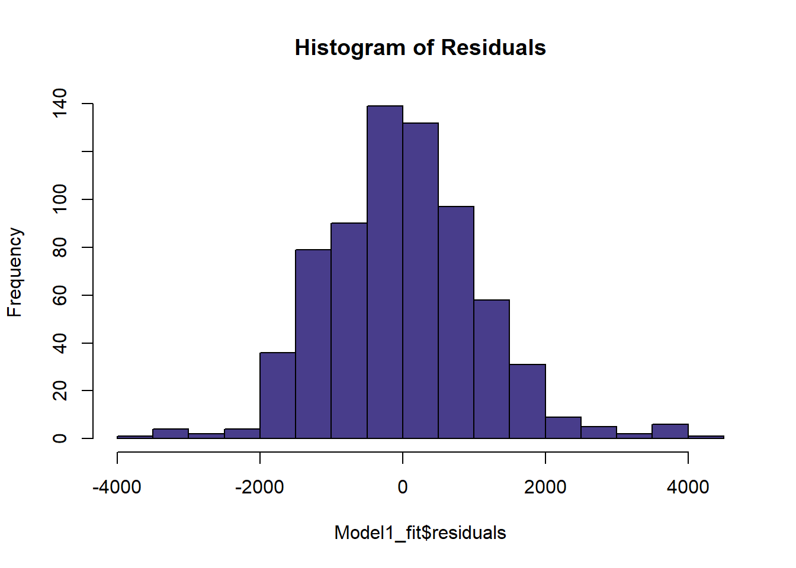
sqrt(sum((Model1_fit$residuals)^2))## [1] 28853.5# Predict with this model
preds2 <- predict(Model1_fit, newdata = dfTest)
# Assess model
MSPE = data.frame(Observed = dfTest$MonthlyIncome, Predicted = preds2)
MSPE$Resisdual = MSPE$Observed - MSPE$Predicted
MSPE$SquaredResidual = MSPE$Resisdual^2
mean(MSPE$SquaredResidual)## [1] 992086.6# Multiple variable linear regression
Model2_fit = lm(MonthlyIncome~Age+JobLevel+JobRole, data = employee.df)
summary(Model2_fit)##
## Call:
## lm(formula = MonthlyIncome ~ Age + JobLevel + JobRole, data = employee.df)
##
## Residuals:
## Min 1Q Median 3Q Max
## -3639.3 -671.7 -46.5 634.8 4097.4
##
## Coefficients:
## Estimate Std. Error t value Pr(>|t|)
## (Intercept) -564.822 249.203 -2.267 0.02367 *
## Age 13.701 4.729 2.898 0.00386 **
## JobLevel 3032.839 69.606 43.571 < 2e-16 ***
## JobRoleHuman Resources -324.725 255.782 -1.270 0.20459
## JobRoleLaboratory Technician -526.524 171.357 -3.073 0.00219 **
## JobRoleManager 3968.183 232.376 17.077 < 2e-16 ***
## JobRoleManufacturing Director 85.832 169.605 0.506 0.61294
## JobRoleResearch Director 3941.604 217.548 18.118 < 2e-16 ***
## JobRoleResearch Scientist -249.221 171.560 -1.453 0.14668
## JobRoleSales Executive -127.854 146.073 -0.875 0.38167
## JobRoleSales Representative -404.623 215.498 -1.878 0.06077 .
## ---
## Signif. codes: 0 '***' 0.001 '**' 0.01 '*' 0.05 '.' 0.1 ' ' 1
##
## Residual standard error: 1080 on 859 degrees of freedom
## Multiple R-squared: 0.9455, Adjusted R-squared: 0.9448
## F-statistic: 1490 on 10 and 859 DF, p-value: < 2.2e-16# Show residuals
hist(Model2_fit$residuals, col = "darkslateblue", main = "Histogram of Residuals")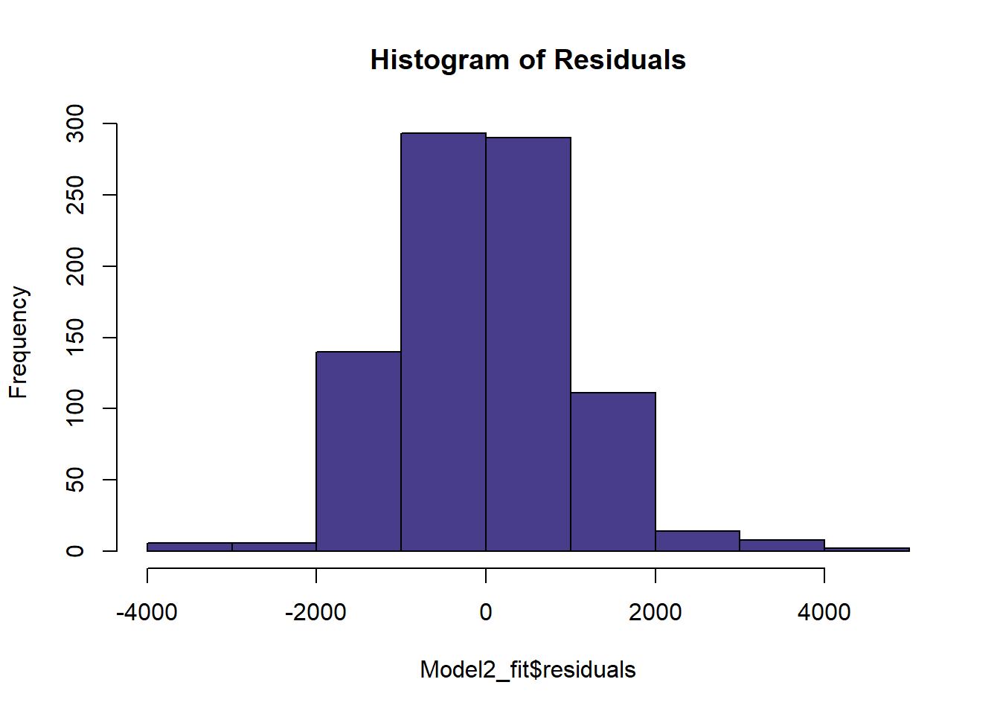
sqrt(sum((Model2_fit$residuals)^2))## [1] 31647.6# Predict with this model
preds2 <- predict(Model2_fit, newdata = NoSalary)
preds2 <- as.data.frame(preds2)
NoSalary$Salary <- preds2[,1]
# Plot predicted values
NoSalary %>% ggplot(aes(x = Age, y = Salary)) +
geom_point(color = "darkslateblue") +
ggtitle("Predicted Salary by Age") +
ylab("Salary") +
theme(plot.title = element_text(hjust = 0.5))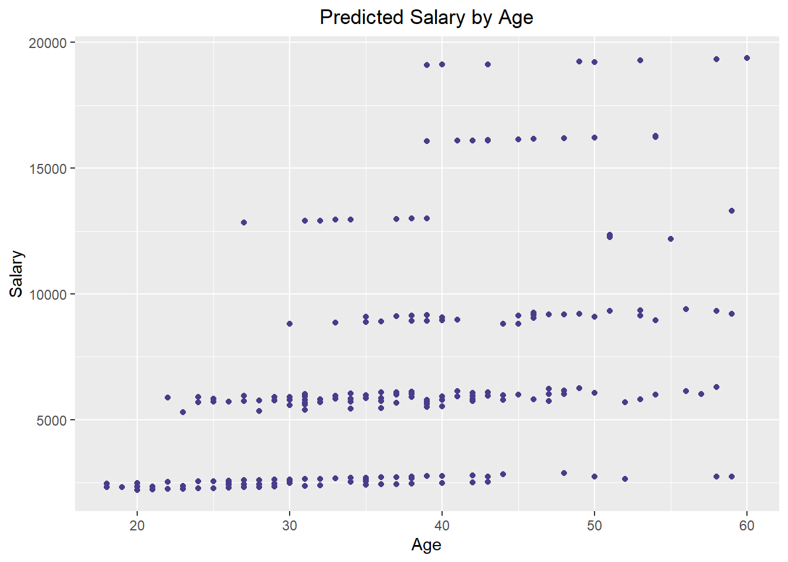
#Salary.Classify = NoSalary %>% select("ID", "Salary") %>% arrange(ID)
# This code was used to label the predicted Salary amounts on the file provided, but commented out to not replace the file when knitted at a later time.
#write.csv(Salary.Classify, file = "Case2PredictionsBoyd_Pandey Salary.csv", row.names=FALSE)